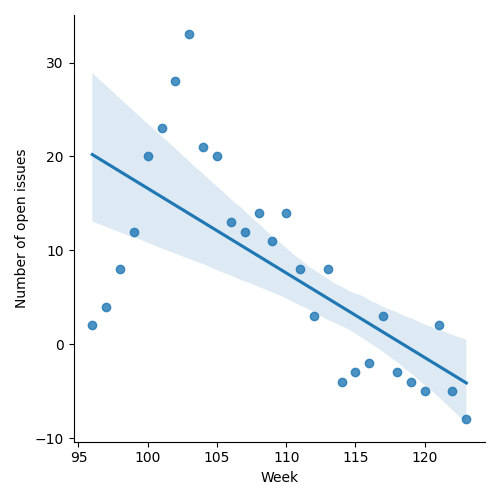
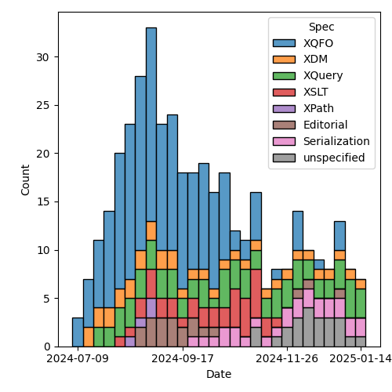
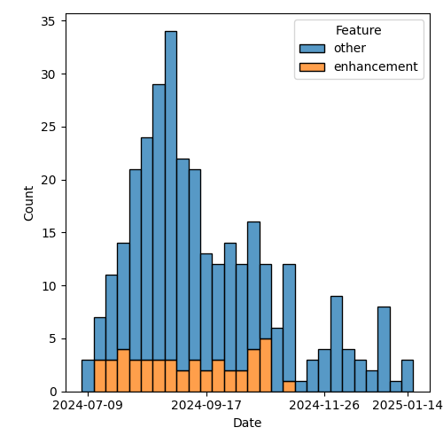

QT4 CG Meeting 106 Minutes 2025-01-21
Meeting index / QT4CG.org / Dashboard / GH Issues / GH Pull Requests
Table of Contents
- Draft Minutes
- Summary of new and continuing actions
[0/6] - 1. Administrivia
- 2. Technical agenda
- 3. Any other business
- 4. Adjourned
Draft Minutes
Summary of new and continuing actions [0/6]
[ ]QT4CG-082-02: DN to work with MK to come to agreement on the fn:ranks proposal[ ]QT4CG-088-04: [Someone] needs to update the processing model diagram needs vis-a-vis the static typing feature[ ]QT4CG-097-02: MK to make the XSD schema component references into links to XSD[ ]QT4CG-103-01: MK to add an example of showing all the properties for an untyped node.[ ]QT4CG-106-01: NW to remove the dead wood from the XSLT build.[ ]QT4CG-106-02: MK to apply the typos changes and then merge this PR #1703.[ ]QT4CG-106-03: MK to write the XPath that puts map keys in record order as an example.
1. Administrivia
1.1. Roll call [13/13]
[X]David J Birnbaum (DB)[X]Reece Dunn (RD)[X]Sasha Firsov (SF)[X]Christian Grün (CG)[X]Joel Kalvesmaki (JK) [:05-][X]Michael Kay (MK)[X]Juri Leino (JLO)[X]John Lumley (JWL)[X]Dimitre Novatchev (DN)[X]Wendell Piez (WP)[X]Ed Porter (EP)[X]Bethan Tovey-Walsh (BTW)[X]Norm Tovey-Walsh (NW). Scribe. Chair.
1.2. Accept the agenda
Proposal: Accept the agenda.
Accepted.
1.2.1. Status so far…
These charts have been adjusted so they reflect the preceding six months of work.

Figure 1: “Burn down” chart on open issues

Figure 2: Open issues by specification

Figure 3: Open issues by type
1.3. Approve minutes of the previous meeting
Proposal: Accept the minutes of the previous meeting.
Accepted.
1.4. Next meeting
This next meeting is planned for 28 January 2025.
SF gives regrets.
MK gives regrets for 4 February.
1.5. Review of open action items [2/6]
(Items marked [X] are believed to have been closed via email before this agenda was posted.)
[ ]QT4CG-082-02: DN to work with MK to come to agreement on the fn:ranks proposal[ ]QT4CG-088-04: [Someone] needs to update the processing model diagram needs vis-a-vis the static typing feature[ ]QT4CG-097-02: MK to make the XSD schema component references into links to XSD[X]QT4CG-097-03: DN to proposal an axis for accessing the siblings of a node.- DN thanks MK for his enthusiastic engagement with the proposal.
[ ]QT4CG-103-01: MK to add an example of showing all the properties for an untyped node.[X]QT4CG-103-02: MK to review other ways of handling namespaces in fn:path
1.6. Review of open pull requests and issues
1.6.1. Blocked
The following PRs are open but have merge conflicts or comments which suggest they aren’t ready for action.
1.6.2. Merge without discussion
The following PRs are editorial, small, or otherwise appeared to be uncontroversial when the agenda was prepared. The chairs propose that these can be merged without discussion. If you think discussion is necessary, please say so.
- PR #1711: 1705 Say that max precision is implementation-defined
- PR #1710: 1709 Updated type diagrams
- PR #1700: Remove some dead .DS_Store files
Proposal: merge these PRs without discussion.
Accepted.
- MK: All the SVG stuff in the XSLT part of the build is dead wood.
ACTION QT4CG-106-01: NW to remove the dead wood from the XSLT build.
1.6.3. Close without action
It has been proposed that the following issues be closed without action. If you think discussion is necessary, please say so.
- Issue #1606: Drop named item types other than named record types
- Issue #1494: Records: Introduction?
- Issue #1176: Use fn:parse-uri to check whether a filepath is relative or absolute
Proposal: close these without further action.
Accepted.
1.6.4. Substantive PRs
The following substantive PRs were open when this agenda was prepared.
2. Technical agenda
2.1. PR #1701: Add dedication to MSM (action QT4CG-088-01)
See PR #1701.
- NW explains the motivation behind his PR.
- JWL: The first sentence of the second paragraph, could we make it clear how long he’s been involved?
Proposal: Accept this PR.
Accepted.
2.2. PR #1712: 1706 Drop "else if" and "else" clauses from braced conditionals
See PR #1712.
- MK: There’s been some discussion, but I think I like this solution for its simplicity. The language is simpler and we haven’t lost any functionality.
- MK: Unfortunately there are some rogue diffs in here.
MK describes the changes in 4.14, Conditional Expressions.
- CG: Maybe it would be helpful to add an example that has else if with the last else branch omitted.
- MK: That’s not allowed.
- CG: Can we look at issue 1706?
- I think this is valid:
if (A) then ( … ) else if (B) { … }
- I think this is valid:
- MK: Yes, I’m not sure I’d recommend it.
- MK: What an
endiforfi. I think that’s confusing. - DN: If this is accepted then we’ll be able to have just one braced action following an if without another intermediate if?
- MK: If I’ve understood you, then I think the answer is yes.
- JWL: When you’ve got the braced bit, if you’ve got an inner one, is it an empty map?
- MK: Yes.
- JLO: If we need to use this mixed kind of syntax, but we don’t want to recommende it, do we want to allow it?
- MK: It’s allowed by orthogonality.
- CG: I think it would be difficult to disallow it. Any expression can be used at that place.
- … My personal preference would be to make the else branch optional everywhere but we’ve discussed that.
Proposal: Accept this PR.
Accepted.
2.3. PR #1686: 1685 Pipeline Operator
See PR #1686.
CG introduces the proposal.
- CG: It’s basically the same as last week, but motivated by David I’ve revised the examples.
CG describes through the revised examples in 4.22, Pipeline operator.
- JLO: This is the first time I’m seeing this. Can’t we remove the other arrow operator?
- MK: We can’t get rid of it, it already exists.
- CG: Yes, the fact that users are already used to the “fat arrow” is
potentially confusing for users.
- … If we started over, we probably would think differently about the operators.
- DN: There probably needs to be more exposition about when to use
=>and when to use->.- … I think using
.as the context value is going to be confusing as well.
- … I think using
- NW: Did any of the other potential symbols meet with favor?
- MK:
.>is ambiguous. Tilde would work. - SF: There are two points I want to emphasis, if we are going to have a schema
definition for XPath and XSLT which will be transparent to existing parsers,
then many things can be moved from the standards to consumers. If we could
allow operator overloading, then users could try things out. This is a
“polyfill” in Javascript.
- … This would allow us to try alternate syntaxes. But it requires the schemas to be available for the parsers.
- DN: I wanted to point out something that I’m concerned about: all of these
syntaxes can very easily be mistyped. In order to avoid this, I would prefer
having a longer operator like
--->>to avoid the possibility of mistyped operators. - JLO: From what I understand, I’m in favor of a mechanism that would allow
polyfills, but not everything in Javascript is polyfillable. Maybe this could
be, because it can be expressed as a for expression. I also think that
|and the tilde would work. I’m still really in favor of this operator. - JWL: Is the full width greater than symbol supported in this one? For support in constructors?
- MK: I think for consistency, it would have to be.
- CG: I’ll add it to the list.
- NW: I have real reservations about that use of the full-width greater than.
- RD: Polyfills are hard to do. In JavaScript, it’s done with external tools like Bablefish that convert from the version with the syntax extensions to a version that doesn’t use them. We don’t have something like that in XQuery so it would be difficult to get up and running.
- SF: The root cause of the difficulties in experimentation is that the parser does not have the API to access to the schema definitions. And the language isn’t schema driven. Once we can introduce schema-driven parsers, then the new operator is easy to do.
- RD: But different vendors have different approaches to parsing the language implementing the grammar. Telling BaseX or Saxon to use a different parser grammar isn’t really practical.
- SF: This is about pre-release capabilities for experimentation.
- NW: Do you have a proposal for this kind of schema design?
- RD: Usually this is hidden behind compiler flags.
Some discussion of how implementations might approach this problem.
- SF: Let’s take this to email.
- MK: The issues that SF has raised are important. They’re equally relevant to
all the proposals. We need to distinguish two seperate issues: community
feedback and review is one and incremental delivery of features is the other.
I don’t think we should try to standardize the latter.
- … The point about review of the specs is something we need to put on our agenda. When should we put out a spec for review? And can we get informal agreement between implementors that they’ll have something users can play with.
- NW: Yes, I think steering this ship towards a final spec is something we should talk about soon.
- JK: I think SF’s idea is a good one. I think one issue is that you might not
get the feedback you expect because the environment might not be right for
getting meaningful data.
- … You could also find that users like a syntax that introduces ambiguities.
- … We also need to pick a specific syntax.
- … Happy to discuss.
- SF: The mechanism for making it real already exists in the JavaScript community. It’s not always the case that the most popular choice is the best but it’s a metric.
Proposal: Accept this PR.
Accepted.
2.4. PR #1703: 1651 ordered maps
See PR #1703.
- MK: I think this is a reduced version of previous proposals. It effects all of the specs.
- MK: In the Data Model it changes the definition of a map item and the functions that operate on them.
- MK: In XPath, a map now has an “entry order” which we say a few things about.
- … We say that the order doesn’t effect matching against the type.
- … Map constructors now return a map in which the order of entries is retained.
- … Lookup operators are defined to return results in entry order.
- JWL: If I use the record constructor, then they’ll be in the order the record is defined.
- But what happens if I do map puts in the “wrong” order?
- MK: If you use a record constructor that uses latitude and longitude, they’ll be in that order. But if you put them in the other order, they’d still match the type.
You can work out the order by iterating over the entries.
- MK: The order is primarily for users, you can use it for semantic information but that’s not the primary reason.
- MK: In Functions and Operators, mostly there are notes about when and how the
entries are ordered.
- … In
deep-equal, maps are compared without order. - …
json-to-xmlandxml-to-jsonboth retain order. - …
parse-jsonis defined to retain the oreder of maps. - … Basically, ever function that returns a map has to say something about the ordering.
- … In
- MK: And in the serialization spec, we say that the json output method returns order.
- CG: This looks like a complete proposal. I’ve noted some minor typos.
ACTION QT4CG-106-02: MK to apply the typos changes and then merge this PR.
- WP: I’m a little concerned about transparency of expectations. A function that
puts maps that are records into the “right” order might be useful.
- … In general, I think it’s great.
- JWL: I think that function can be written in XPath itself.
- MK: Oh, yes.
ACTION QT4CG-106-03: MK to write the XPath that puts map keys in record order as an example.
- JWL: One example of when you’d need this is when your interpolating coordinates in multiple maps.
- MK: Yes, we had a separate issue on sorted maps and this allows you to do it for retrieval but not to retain sorted order on insertion.
Proposal: Accept this PR.
Accepted.
3. Any other business
None heard.